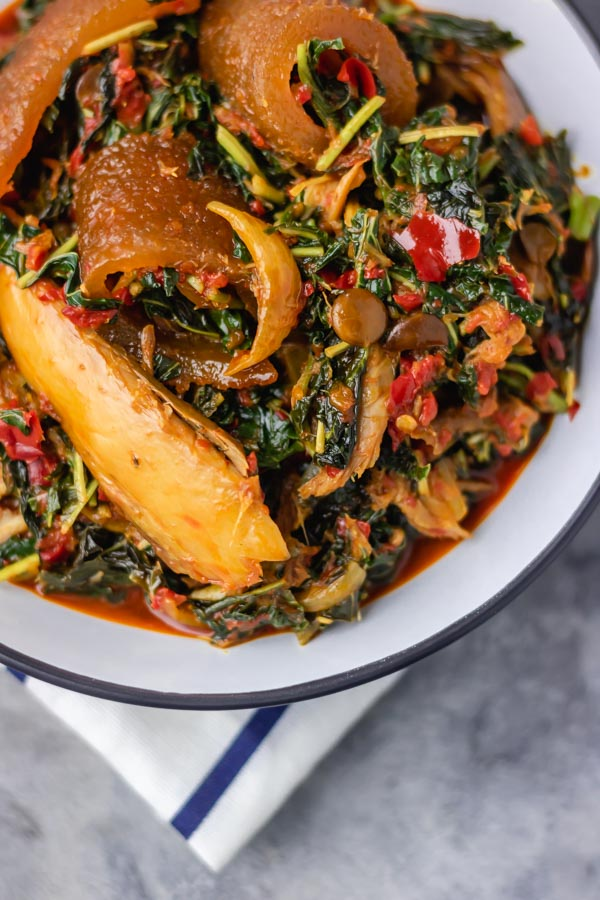

Efo riro Recipe

Tasty Efo riro Recipe
This is the best efo riro recipe you can
find anywhere on the internet. If you are
looking for how to make efo riro, look no further,
you are at the right place. It is delicious,
quick and it qualifies for low carb Nigerian
food as it can be eaten on its own
If you want to make efo riro the yoruba way,
it is important you use locust beans,
smoked fish/dried fish and palm oil. Every
other thing you decide to add after the core
ingredients just complements it
Efo riro Ingredients
- Bunches of green vegetables (efo tete)
- Red bell peppers (tatashe)
- Scotch bonnet chillies
- Onions
- Knorr Seasoning Cubes
- Palm oil
- Locust beans (Iru woro)
- Dried shawa/palamu (dried smelt fish)
- Smoked mackerel
- Smoked ponmo, washed and diced
- Ground crayfish
Steps
- Start cooking the shaki first with as
little water as possible (see video below)
as it is the toughest meat in the bunch.
This soup should have as little water as
possible so add small amounts of water at a
time and top it up as you cook.
- When the shaki starts to curl, add
the dry fish and stockfish.
- When the shaki is almost done, add beef,
stock cubes and some of the onions and
cook till all the meat and fish are well done.
Set these aside.
- In another pot, pour the palm oil and heat it up.
Once hot, add the remaining onions.
- Fry the tatashe peppers till there's no more water in it.
This should take about 15 minutes.
- Add the locust beans, crayfish, and stir very well.
- Add the cooked meat and fish, stir very well.
- Add the vgetables, stir very well,
cover and once it heats up again, add
salt to taste and take the pot off the stove.